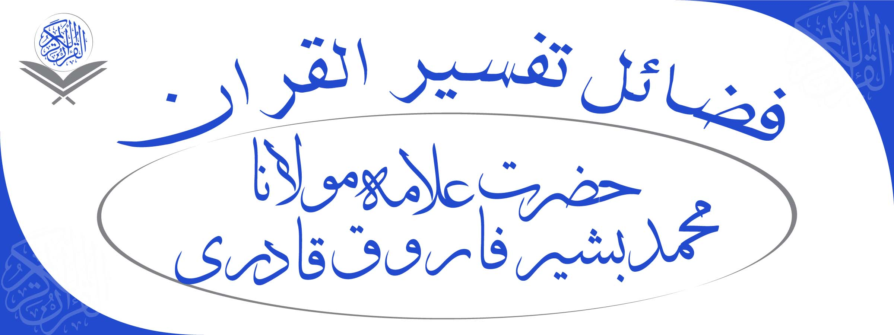

<html ng-app="ionicApp">
<head>
  <meta charset="utf-8">
  <meta name="viewport" content="initial-scale=1, maximum-scale=1, user-scalable=no, width=device-width">

  <title>Tafseer-e-Quran</title>

  <link href="css/ionic.css" rel="stylesheet">
  <link href="css/ionicons.min.css" rel="stylesheet">
  <link href="css/bootstrap.min.css" rel="stylesheet">
  <link href="css/bootstrap-theme.min.css" rel="stylesheet">
  <link href="css/ionicons-2.0.1/css/ionicons.min.css" rel="stylesheet">
<style>
  @font-face {
    font-family: urdu;
    src: url(fonts/Jameel%20Noori%20Nastaleeq.ttf);
  }

  body {
    font-family: urdu;
  }
  #ch {
    font-size: 2em; !important;
  }

</style>


</head>
<body>

<ion-nav-bar class="bar-positive">
  <ion-nav-back-button>
  </ion-nav-back-button>
</ion-nav-bar>

<ion-nav-view></ion-nav-view>

<!--Navigation Start-->

<script id="templates/tabs.html" type="text/ng-template">
  <ion-tabs class="tabs-icon-top tabs-positive">

    <ion-tab title="Home" icon="ion-home" href="#/tab/home">
      <ion-nav-view name="home-tab"></ion-nav-view>
    </ion-tab>

    <ion-tab title="About" icon="ion-ios-information" href="#/tab/about">
      <ion-nav-view name="about-tab"></ion-nav-view>
    </ion-tab>

    <ion-tab title="Contact" icon="ion-ios-world" ui-sref="tabs.contact">
      <ion-nav-view name="contact-tab"></ion-nav-view>
    </ion-tab>

  </ion-tabs>
</script>

<!--Navigation End-->

<!--Home-->

<script id="templates/home.html" type="text/ng-template">
  <ion-view view-title="Home">
    <ion-content class="padding">

      <p>
        
      </p>

      <div class=" text-center">

        <div class="item item-image" >
          
        </div>

        <audio id="player1" src="http://www.saylaniwelfare.com/check/2.mp3"></audio>
          <div style="background-color: rgb(56, 126, 245); color: #ffffff; margin-top: 8px">
            <button class="btn btn-lg ion-ios-play" style="background-color: rgb(56, 126, 245); color: #ffffff;" onclick="document.getElementById('player1').play()"></button>
            <button class="btn btn-lg ion-ios-pause" style="background-color: rgb(56, 126, 245); color: #ffffff" onclick="document.getElementById('player1').pause()"></button>
            <!--<a class="btn btn-lg ion-ios-download" style="background-color: rgb(56, 126, 245); color: #ffffff"  href="http://www.saylaniwelfare.com/check/2.mp3" ></a>-->
            <a class="pcast-download btn btn-lg ion-ios-download" style="background-color: rgb(56, 126, 245); color: #ffffff" href="http://www.saylaniwelfare.com/check/2.mp3" download></a>
          </div>

      </div>

      <div class="item item-image" >
        
      </div>
     <p>
        <a class="button button-positive button-block icon icon-right ion-chevron-right" href="#/tab/facts" style="font-size: 1.5em; height: 50px">Tafseer-e-Quran</a>
      </p>


    </ion-content>
  </ion-view>
</script>

<!--Home-->

<!--Surah Page-->

<script id="templates/facts.html" type="text/ng-template">
  <ion-view view-title="Surahs">
    <ion-content class="padding">
      <p>
       <!--<a class="button icon icon-right ion-chevron-right" href="#/tab/facts2">Surah Fatiha</a>-->
      <div class="list">
        <a class="item item-thumbnail-left" href="#/tab/facts2">
          
          <h2>Surah Fatiha</h2>
          <p> Tafseer By Mufti Asif Abdullah </p>
        </a>

        <a class="item item-thumbnail-left" href="#">
          
          <h2>Surah Bakra</h2>
          <p>Comming Soom</p>
        </a>
      </div>
      </p>
    </ion-content>
  </ion-view>
</script>

<!--Surah Page-->

<!--Surah-->

<script id="templates/facts2.html" type="text/ng-template">

  <ion-view view-title="Surah Fatiha">

    <ion-content class="padding">

      <ion-slide-box on-slide-changed="slideHasChanged($index)"  does-continue="true">
        <ion-slide nav-direction="swap">
          <ion-scroll  zooming="true" min-zoom="1" direction="xy" locked="false">
            <div class="box blue"></div>
          </ion-scroll>
        </ion-slide>
      </ion-slide-box>

      <div class="bar bar-footer center-block text-center">
        <audio id="player" src="http://www.saylaniwelfare.com/check/1-02.mp3"></audio>
        <div class="navbar-fixed-bottom">
          <button class="btn btn-lg ion-ios-play" style="background-color: rgb(56, 126, 245); color: #ffffff;" onclick="document.getElementById('player').play();"></button>
          <button class="btn btn-lg ion-ios-pause" style="background-color: rgb(56, 126, 245); color: #ffffff" onclick="document.getElementById('player').pause()"></button>
          <button class="btn btn-lg ion-ios-plus" style="background-color: rgb(56, 126, 245); color: #ffffff" onclick="document.getElementById('player').volume+=0.1"></button>
          <button class="btn btn-lg ion-ios-minus" style="background-color: rgb(56, 126, 245); color: #ffffff" onclick="document.getElementById('player').volume-=0.1"></button>
          <a class="btn btn-lg ion-ios-download" style="background-color: rgb(56, 126, 245); color: #ffffff"  href="http://www.saylaniwelfare.com/check/1-02.mp3" ></a>
        </div>
      </div>
    </ion-content>

  </ion-view>

</script>

<!--Surah-->

<!--About-->

<script id="templates/about.html" type="text/ng-template">
  <ion-view view-title="About">
    <ion-content class="padding">
      <p>
      <div class="list">
        <div class="item">
          
        </div>

      <h3 class="text-justify" style="word-wrap: break-word;">Since 1999 , Saylani is a non-profitable charitable organization working with an aim to provide free and best services in Education , Medical and Food to people who cannot afford & living in dark.

        By the Grace of Almighty Allah and the contribution of well to do and honorable citizens,
        We are helping 100,000 (ONE HUNDRED THOUSAND) people every day.

        In a struggling economy, where people are facing difficulties in living another day of their life , It’s our  responsibility to facilitate the distressed people , improve quality of life for them & future generation.
      </h3>


    </div>
      </p>
    </ion-content>
  </ion-view>
</script>

<!--About-->


<script id="templates/contact.html" type="text/ng-template">
  <ion-view title="Contact">
    <ion-content>

      <div class="list card">
        <h2 class="text-center" style="font-size: 1.5em"> Contact Us</h2>
        <a href="#" class="item item-icon-left">
          <i class="icon ion-home"></i>
          A-25 Main Bahadurabad Karachi
        </a>

        <a href="#" class="item item-icon-left">
          <i class="icon ion-ios-telephone"></i>
          111-729-526
        </a>

        <a class="item item-icon-left" href="#">
          <i class="icon ion-email"></i>
          tafseer-e-quran@saylaniwelfare.com
        </a>
      </div>

      <div class="list card">
        <h2 class="text-center" style="font-size: 1.5em"> Developers</h2>

        <a href="#" class="item item-icon-left">
          <i class="icon ion-android-phone-portrait"></i>
          0336-7860736
        </a>

        <a class="item item-icon-left" href="#">
          <i class="icon ion-email"></i>
          saylani.developers@gmail.com
        </a>
      </div>

    </ion-content>
  </ion-view>
</script>

</body>

<script src="js/angular.js"></script>
<script src="js/main.js"></script>
<!--<script src="js/app.js"></script>-->
<script src="js/ionic.bundle.js"></script>


</html>